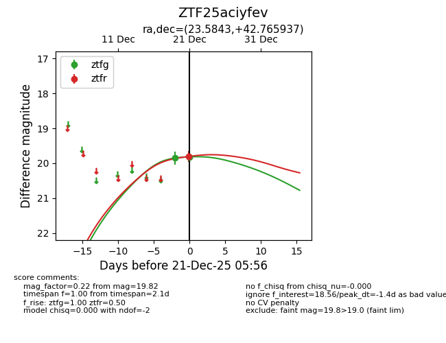
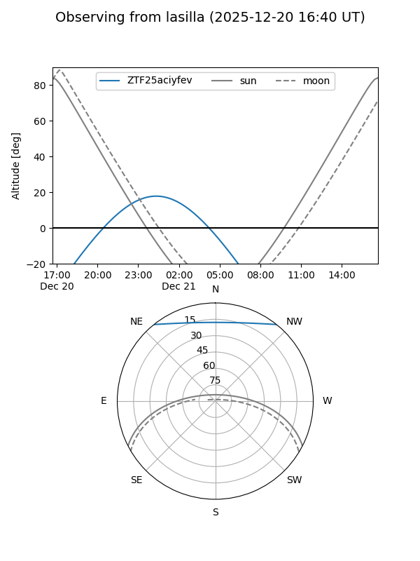
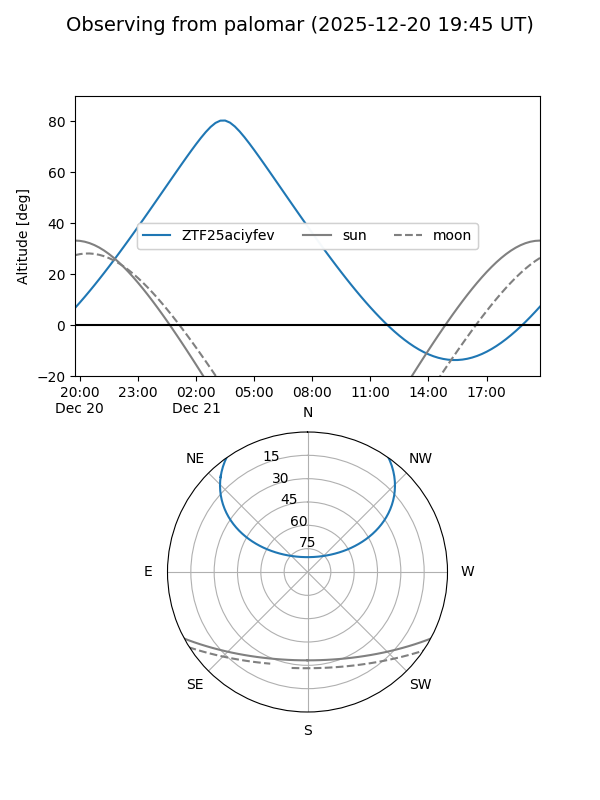
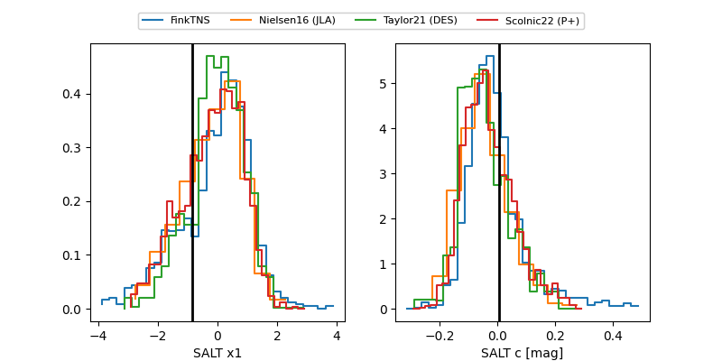

ZTF25aciyfev
Target ZTF25aciyfev at 2025-12-21 05:58
Aliases and brokers:
FINK: fink-portal.org/ZTF25aciyfev
Lasair: lasair-ztf.lsst.ac.uk/objects/ZTF25aciyfev
ALeRCE: alerce.online/object/ZTF25aciyfev
alt names
ZTF25aciyfev (ztf,fink_ztf)
Coordinates:
equatorial (ra, dec) = 23.5843,+42.76594
equatorial (HMS+DMS) = 01:34:20.23,+42:45:57.37
galactic (l, b) = (131.2605,-19.41099)
Flags:
Photometry:
last ztfg=19.82, ztfr=19.81
2 ztfg, 1 ztfr detections
Lightcurve

Visibility


Additional plots
